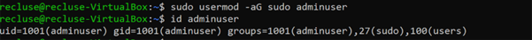
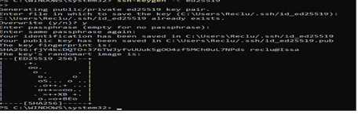
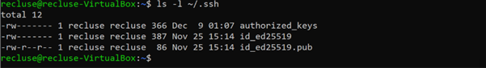
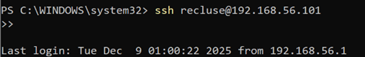
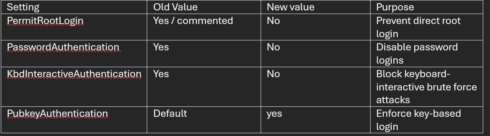
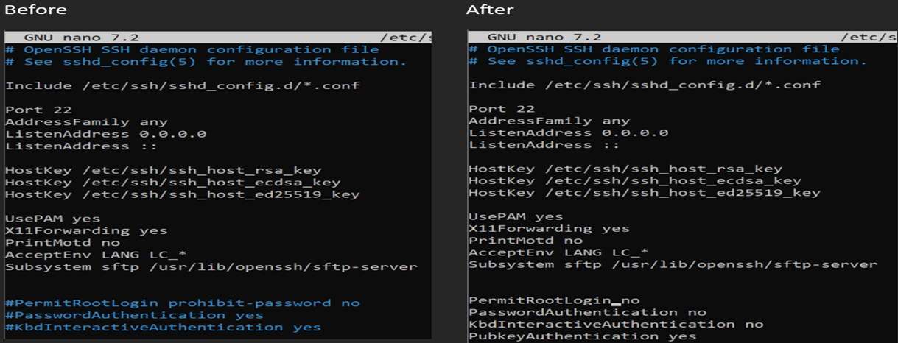
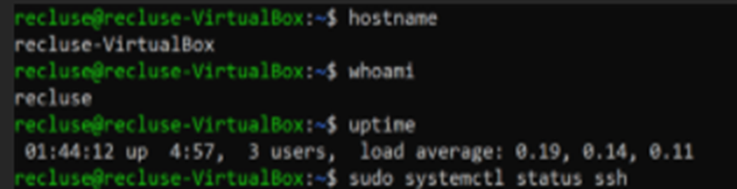

Week 4 focused on initial security configuration, specifically setting up secure remote administration
using SSH and hardening the default configuration. The goal was to ensure the VM could be managed remotely
while reducing common attack vectors such as direct root login and password-based brute force attempts.
What I did
Created/validated a non-root admin user and ensured it had sudo permissions for administrative tasks.
Generated an SSH key pair on the workstation and transferred the public key to the VM.
Configured key-based authentication by adding the public key to ~/.ssh/authorized_keys.
Hardened the SSH server configuration by disabling direct root login and disabling password / keyboard-interactive authentication.
Validated remote access by connecting from the workstation to the VM over SSH.
Enabled the firewall and restricted SSH access to the workstation IP only to minimise exposure.
Why these changes matter
Disable root login: prevents direct privileged access over the network.
Disable password & keyboard-interactive login: reduces risk of brute-force attacks.
Enable key-based authentication: stronger authentication and easier auditing.
Firewall SSH restriction: limits who can attempt to connect in the first place.
The screenshots below provide evidence of the key configuration steps: user privilege setup, SSH key creation
and installation, successful remote login, before/after SSH hardening settings, and firewall status.
Evidence Screenshots

Non-root admin user privilege configuration (adding user to sudo group and verifying group membership).

SSH key pair created on the workstation (public/private key generation).

Public key transferred from workstation to VM (key deployment step before adding to authorized_keys).

Successful SSH connection from the workstation to the VM (remote administration confirmed).

SSH hardening configuration summary (old values vs new values and purpose).

Before/after view of /etc/ssh/sshd_config showing hardening changes (root login disabled, password auth disabled, key auth enabled).Firewall enabled and SSH restricted to the workstation IP (reducing the attack surface).

System identity checks (hostname/whoami/uptime) and SSH service validation on the VM.